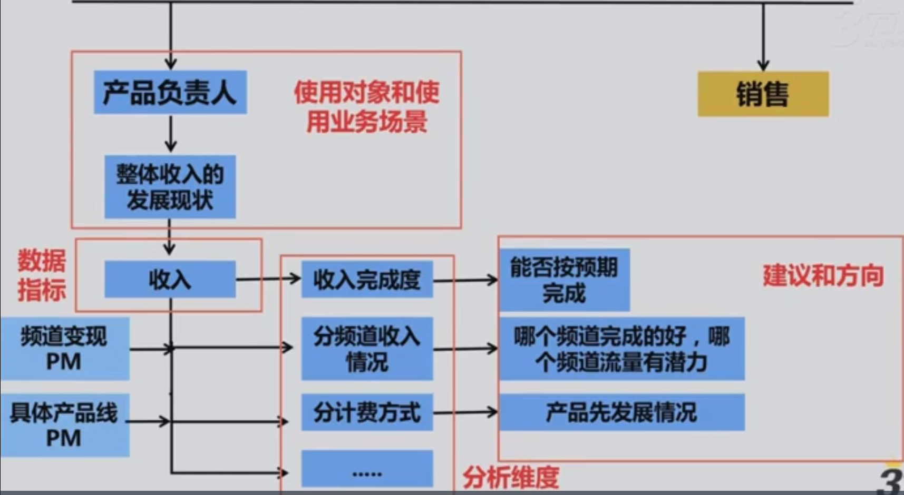
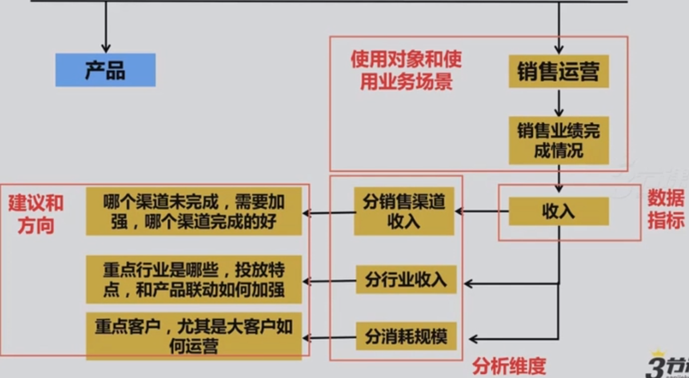
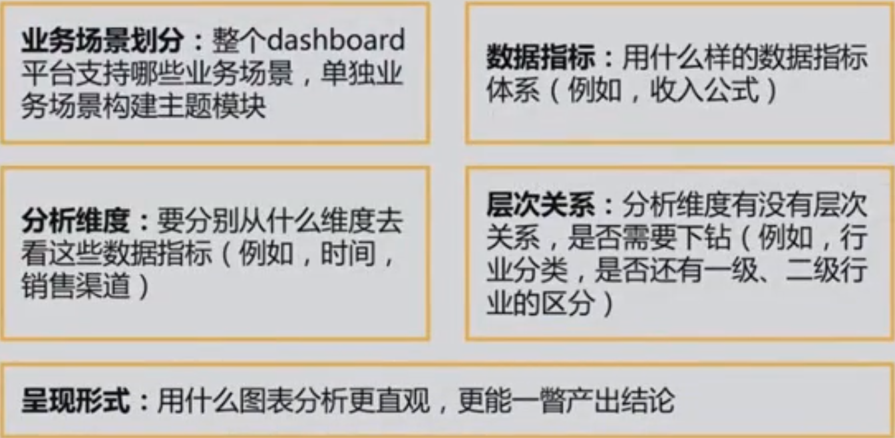
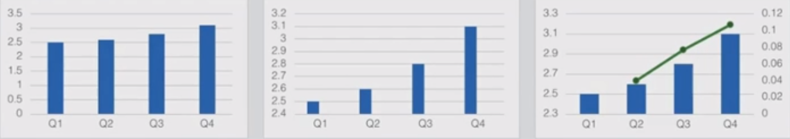
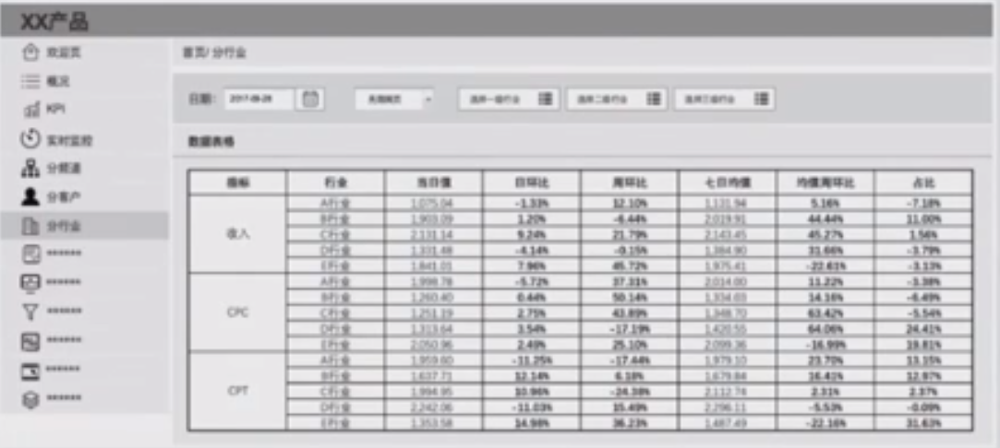

仪表盘是为了实现某些特定目标而对重要信息进行的视觉传达方式，对一屏上的内容进行组织呈现使人一瞥便能掌握其中所要传达的信息
dashboard设计的几个基本原则
起点：业务理解
三个关键词
特定目标：任何事情都服务与终极目标——收入
重要信息：展示&监控商业数据指标
传达信息：明确给谁看，看什么，希望别人看到的是什么
商业dashboard设计5步走
明确数据业务场景
不断反问思考 So What
明确使用场景
确定数据指标
确定分析维度
建议和方向


设计整体框架

明确数据源
准确性
时效性
归一性：数据平台的数据源和整个大业务线、公司的数据保持一致，不能数据在自己的业务上是可看、可解读的，但是一出去就没意义了
功能模块设计
权限管理：使用对象的区隔，数据的机密性管理
关键指标监控：保证对整体业务目标完成的把控性
实时收入监控：不同的业务分析场景，需要的数据监控频率要求不同。所以除了定期的监控汇报，关于整体收入维度上需要一个实时的监控来预警业务形态是否出现问题
总分式结构：整体概况和分业务情况，一般必备的2个业务维度是平台维度（流量），行业维度（客户），其他维度可结合具体业务线情况设计
设计原则
功能设计
突出核心指标
突出对比
总分式结构，提供细分及下钻
界面设计
简洁为上
避免过多颜色
选择正确的可视化形式

案例

小结
充分考虑使用者的业务需求，确定dashboard主题